产品技术 
大气环境监测仪器
水环境监测仪器
光电探测仪器
光电探测仪器
生命科学仪器
生命科学仪器
一氧化氮(NO)气体分析仪
综合水质在线监测系统以物联网+云计算+大数据技术为依托，结合公司自主研发的PAHs检测仪（水中有毒物质多环芳香烃等）、CDOM检测仪（水中溶解有机物）、BOD检测仪（水中生物耗氧量）、COD检测仪（水中化学耗氧量）、水浊度检测仪、pH值检测仪、电导率检测仪、ORP检测仪等传感设备，对市政及工业污水，饮用水，河流、胡泊、海洋等水体，实验室用水等水质进行实时监测，同时分析一定时期内水质变化趋势。
| 形式多样： | 监测站点可以选用站房、便携箱、车载、机柜、浮标等多种方式，监测使用范围广,监测形式多样化 |
| 实时监控： | 可以实现水质实时在线监测，并将水质参数实时传输到服务器 |
| 可扩展： | 可以增加监测点数量，将多个站点的数据结合起来，综合计算水质变化与时间及空间相应关系的演化规律 |
| 高精度： | 关键传感器采用紫外荧光、紫外吸收、差分吸收等方法，具有很高的测量精度 |
| 无线传输： | 无线网络传输，不受距离限制，增加系统灵活性 |
| 无污染： | 采用光学、电化学传感器，没有化学试剂，无二次污染 |
| 可预测： | 通过长时间数据分析，可以预测水质变化趋势 |